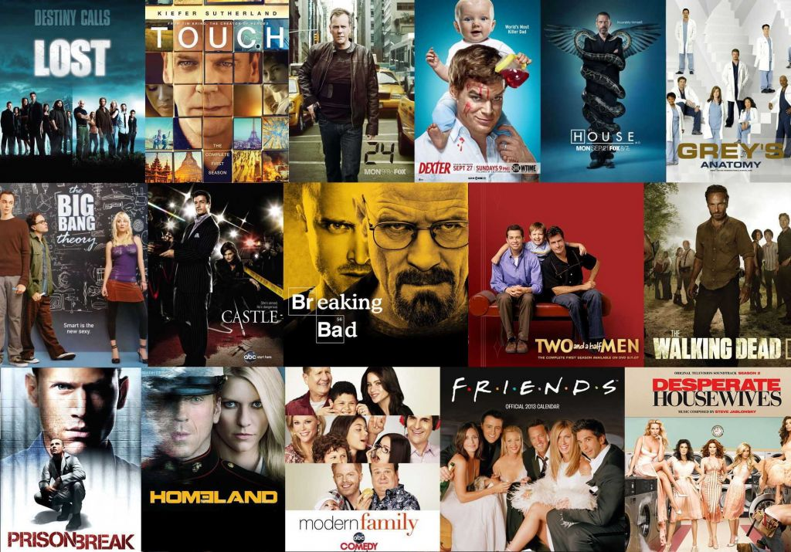

Escolha do Gênero: Escolha séries que se alinhem com seus gostos pessoais. Se você gosta de ação,
drama, comédia ou ficção científica, escolha uma série que esteja dentro desse gênero.
Diversidade de Plataformas: Explore diferentes plataformas de streaming, como Netflix, Amazon Prime
Video, Disney+, HBO Max, entre outras, para encontrar uma variedade de opções.